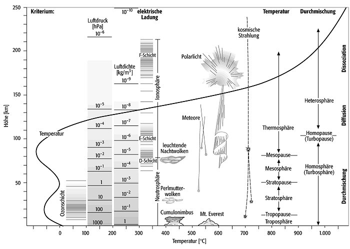

AUFGABE 4 — TEMPERATURVERLAUF ANALYSIEREN
OFFEN
Analysiere die Graphik und entscheide: Wahr oder Falsch? Klicke auf eine Aussage, um sie zu markieren.


Die Datenspeicher sind durcheinandergeraten. Bringe die Schichten der Atmosphäre in die richtige Reihenfolge — von unten (Erdoberfläche) nach oben. Ziehe und lege ab!
Der Text enthält Fehler (rot markiert = anklicken zum Korrigieren) und Lücken (Felder ausfüllen). Stelle den korrekten Text wieder her!
Wähle eine Erklärung aus und weise sie dem richtigen Begriff zu. Klicke auf eine Erklärung, dann auf den passenden Begriff.
Analysiere die Graphik und entscheide: Wahr oder Falsch? Klicke auf eine Aussage, um sie zu markieren.
